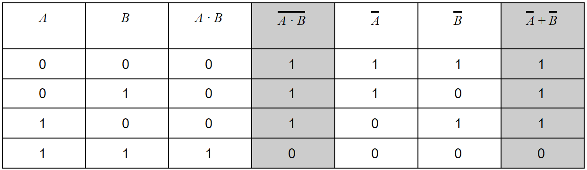
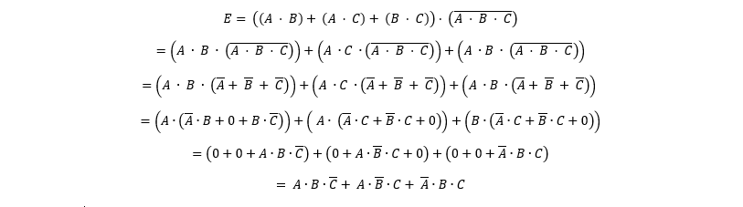
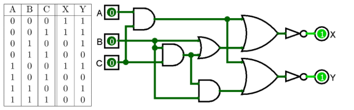
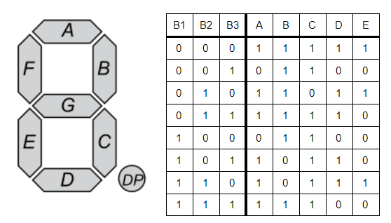
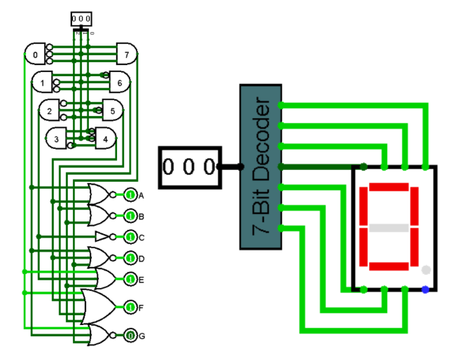

Project 1: Gates and Wires
Oefening 1: Bewijzen van De Morgan's stellingen
1.a:
De eerste stelling die we bewijzen luidt als volgt: A + B = A · B
Hiervoor stellen we volgende truth table op:

In kolom 1 en 2 staan alle combinaties die gevormd kunnen worden met twee binaire variabelen
A en B. Kolom 3 bevat de logische AND operatie van A en B. Kolom 4 is de NOT operatie op
kolom 3, dus het linkerdeel van de vergelijking. Kolom 5 en 6 zijn het resultaat van de NOT
operatie op A en B respectievelijk. De laatste kolom toont de OR operatie van kolom 5 en 6, wat
het rechterdeel van de vergelijking is. Nu vergelijken we kolom 4 en 7. We zien dat elke rij van
kolom 4 inderdaad gelijk is aan elke rij van kolom 7.
Hieruit kunnen we besluiten dat A + B = A · B.
1.b:
De tweede stelling luidt als volgt: A · B =A + B
We stellen op dezelfde manier een truth table op, maar we wisselen de AND en OR gates om:

Oefening 2: Bewijs met Booleaanse algebra
We bewijzen volgende stelling:
E = ((A · B) + (A · C) + (B · C)) · (A · B · C)
⇐⇒ E = (A · B · C) + (A · B · C) + (A · B · C)
We doen dit door te vertrekken vanuit de eerste stelling en de expressie zo om te vormen dat we de stelling aan de rechterkan uitkomen.
Stap 1: Distributivity
Stap 2: De Morgan's laws
Step 3: Distributive law
Step 4: Distributive law
Step 5: Null law

Hiermee is bovenstaande stelling bewezen.
Oefening 3: NAND Gate
NAND gate:
Om een NAND gate te maken zijn er twee mogelijkheden (zie onderstaande afbeelding):- Je kunt een NAND gate maken door simpelweg een NOT gate te plaatsen na de output van een AND gate,
- of je kijkt naar De Morgans stellingen en plaats je NOT gates aan de inputs van een OR gate.
Testen van de NAND gate:
Bij deze deeloefening gebruiken we onze 2de NAND gate contructie.
Om te tonen dat deze NAND gate functioneel compleet is, maakten we de volgende 3 poorten AND, OR en NOT:
- AND: Een NAND gate gedraagt zich als een NOT gate als beide inputs gelijk te zijn, dus als je de output van een NAND gate terug door een NAND gate te laten gaan, krijg je hetzelfde als een normale AND gate.
- OR: Bij de OR gate denken we aan De Morgans stellingen en leiden we ze af tot: A + B = NOT(A · A) · NOT(B · B)
- NOT: Zoals eerder gezegd, gedraagt een NAND gate met slecthts 1 input zich als een NOT gate.
Oefening 4: Logisim implementatie van een truth table
Deze probleemstelling was heel uitdagend. Daarom hebben we het opgedeeld in twee deelproblemen. Eerst probeerden we een circuit te maken die de juiste output voor X gaf. Het viel ons op dat waarde 1 voor B altijd 0 als resultaat gaf. Dit gaf ons dus een vermoeden dat het circuit van B to X bestond uit OR gates en een NOT gate. Dit was ook het geval indien A en C beiden 1 waren. Na nog 1 AND gate toe te voegen tussen B en C werkte het circuit naar behoren. Daarna keken we naar wat we aan moesten passen om Y te laten kloppen. Hier hadden we slechts een extra AND gate voor nodig. Na deze laatste wijziging was het hele circuit klaar.
Oefening 5: 7 segment display
De laatste opdracht van dit project was het bouwen van een 7 segment display. Om het iets minder overweldigend te maken, hebben we de logica eerst omgezet in een truth table:

Het voordeel hiervan is dat we een overzicht krijgen van welke waarden invloed hebben op een bepaalde segment. Na de tabel opgesteld te hebben, maakten we een decoder die de drie inputs omzette in een getal met behulp van AND gates met ignored input ports. Daarna konden we kolom per kolom afgaan welke waarden op 0 of 1 moesten staan. Het was dan slechts een kwestie van de numerieke outputs te combineren in OR gates. De laatste stap was het aaneenschakelen van de input, decoder en 7-Segment Display.
